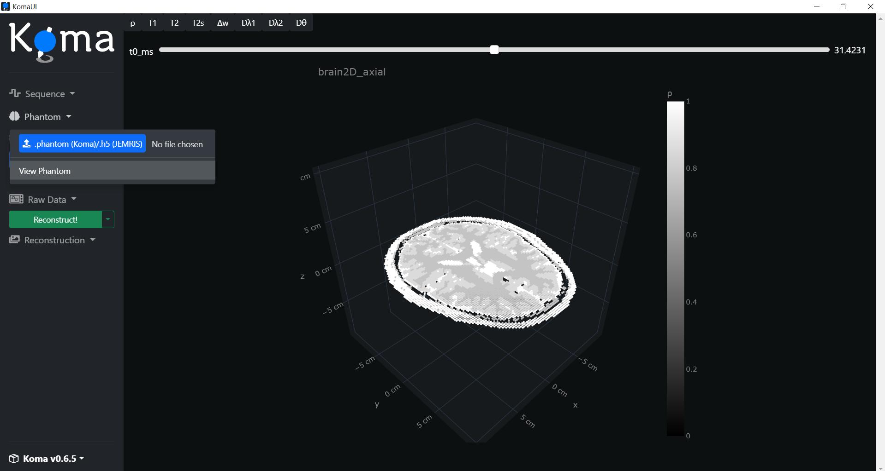
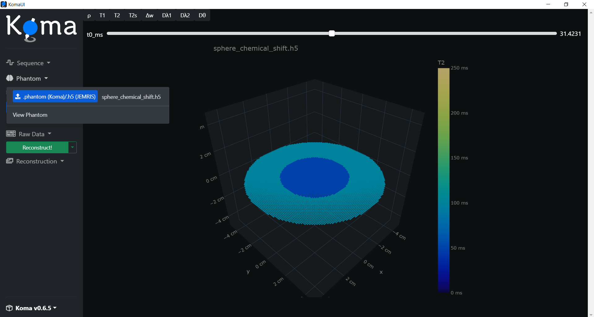
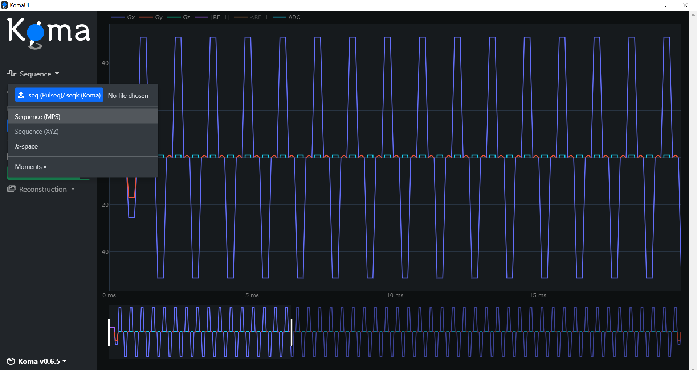
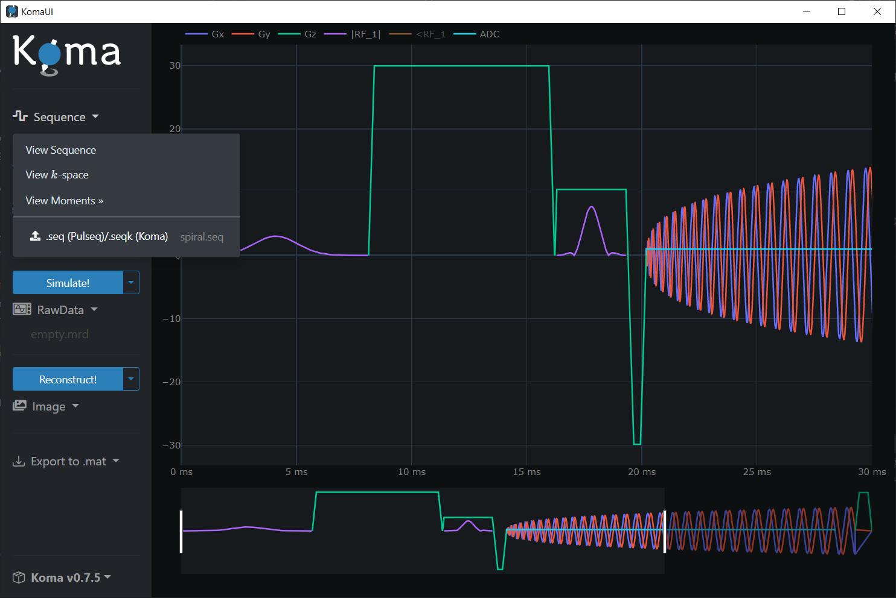
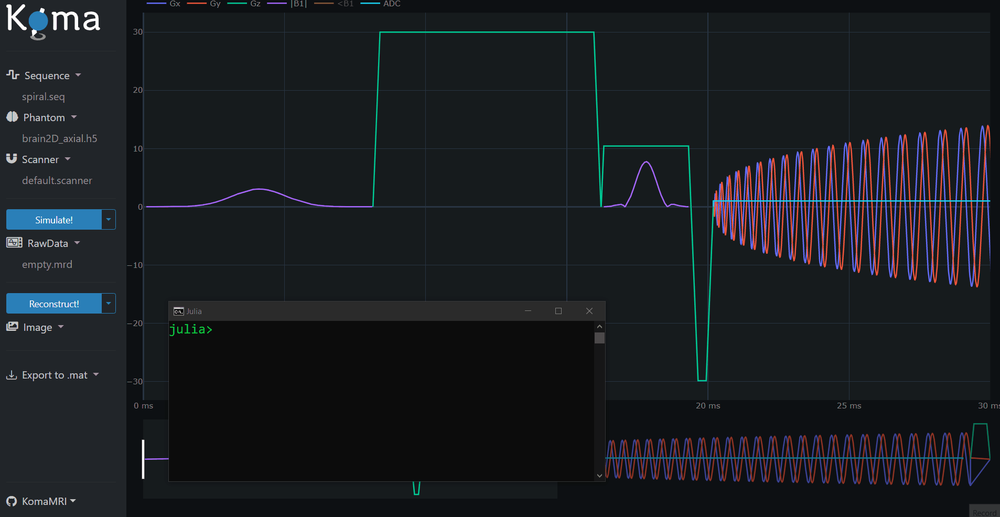

Use Koma's User Interface
This section provides a comprehensive guide on using the User Interface of the KomaMRI package and delves into the internal processes that occur during interaction. By the end of this section, you will be equipped to execute a complete workflow even without any prior programming experience.

Basic Workflow
(You can also go to analog steps using Scripts)
As a general overview, remember the following workflow steps when using KomaMRI:
- Loading Simulation Inputs: Scanner, Phantom, Sequence
- Running Simulation
- Reconstructing Image using MRIReco
In the following subsections, we will cover all the mentioned steps. First, open the Julia REPL and enter the following commands to include the KomaMRI package and launch the user interface:
julia> using KomaMRI
julia> KomaUI()
Loading Simulation Inputs
(You can also go to analog steps using Scripts)
The user interface has preloaded certain inputs into RAM, including the Scanner, Phantom, and Sequence structs. In the following subsections, we will demonstrate how to visualize these inputs.
Scanner
You can visualize the preloaded Scanner struct by clicking on the Scanner dropdown and then pressing the View Scanner button. The Scanner struct contains hardware-related information, such as the main magnetic field's magnitude:

Phantom
To see the phantom already stored in RAM, simply click on the Phantom dropdown an then press the View Phantom button. The preloaded phantom is a slice of a brain:

It is also possible to load .h5 phantom files. The KomaMRI.jl has some examples stored at ~/.julia/packages/KomaMRI/<id-string>/examples/2.phantoms/. For instance, let's load the sphere_chemical_shift.h5 file:

Note that you can select different spin parameters to visualize like ρ, T1, T2, among others.
Sequence
There are two options to visualize the sequence already preloaded in RAM: in the time domain or in the k-space. The preloaded sequence is a single-shot EPI.
For visualization of the sequence in the time domain, click on the Sequence dropdown and then press the Sequence (MPS) button:

For visualization of the sequence in the k-space, click on the Sequence dropdown and then press the k-space button:

You can also display the Moments related to the Sequence by pressing the View Moments and then pressing the buttons for zero, first and second moments.
It is also possible to load Pulseq compatible .seq sequence files. The KomaMRI has some examples stored at ~/.julia/packages/KomaMRI/<id-string>/examples/1.sequences/. For instance, let's load the spiral.seq file and view it the time domain and k-space:


And remember, you are free to interact with the plots:

Running Simulation
(You can also go to analog steps using Scripts)
Once the inputs are loaded in RAM, it is possible to perform the simulation to get the Raw Signal.
Simulation Parameters
To visualize the default simulation parameters, click on the Simulate! dropdown and then press the View Options button:

Visualization of the Raw Signal
Press the Simulate! button to perform the simulation (this may take a while). Automatically the generated Raw Signal should be displayed or you can click on the Raw Data dropdown and then press the View Raw Data button:

Reconstructing Image using MRIReco
(You can also go to analog steps using Scripts)
Once the Raw Signal is loaded in RAM, it is possible to reconstruct the image.
Reconstruction Parameters
To visualize the default reconstruction parameters, click on the Reconstruct! dropdown and then press the View Options button:

Visualization of the Image
Press the Reconstruct! button to perform the reconstruction (this may take a while). Automatically the generated Image should be displayed or you can click on the he Reconstruct! dropdown and then press the |Image| button:

Exporting Results to .mat File
(You can also go to analog steps using Scripts)
The user interface has the option to save the results in .mat format. Simply click on the Export to .mat and you have the alternatives to get data independently or you can press the All button to have all the results given by the simulator:

So far, and due to limitations of the user interface dependencies, the .mat files are saved in the temporal directory of your computer OS, which can be found by typing the tempdir() command in the Julia REPL:

REPL and UI communication
An amazing feature of KomaMRI is that it allows you to modify certain variables in the Julia REPL, and then the user interface automatically updates its plots in real-time:

The variables that update the interface are:
seq_ui[]for the Sequenceobj_ui[]for the Phantomsys_ui[]for the Scannerraw_ui[]for the Raw Signalimg_ui[]for the Image
Don't forget to add the brackets [] to these variables, otherwise it won't work.